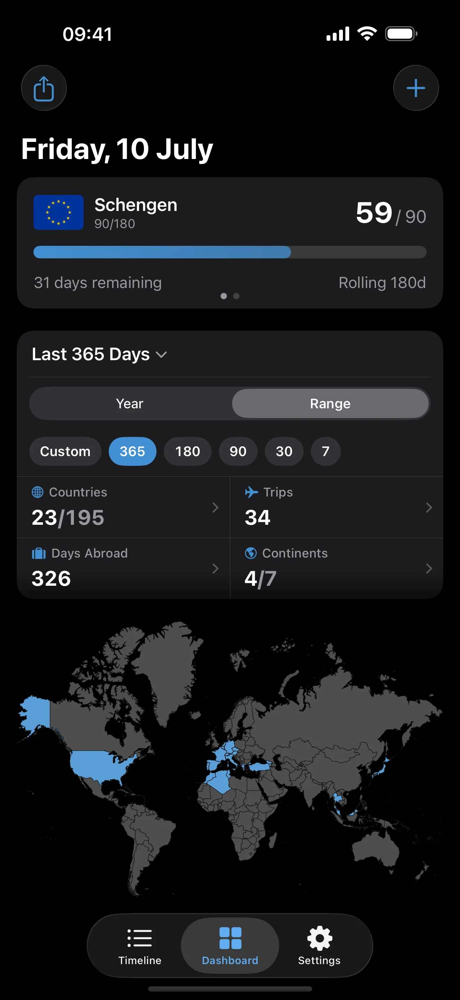
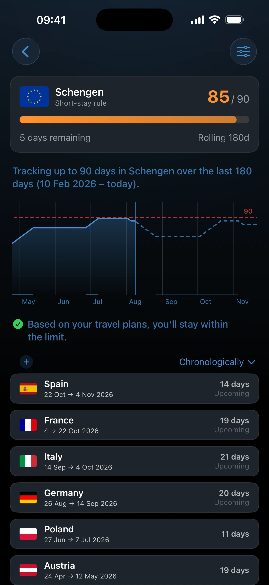
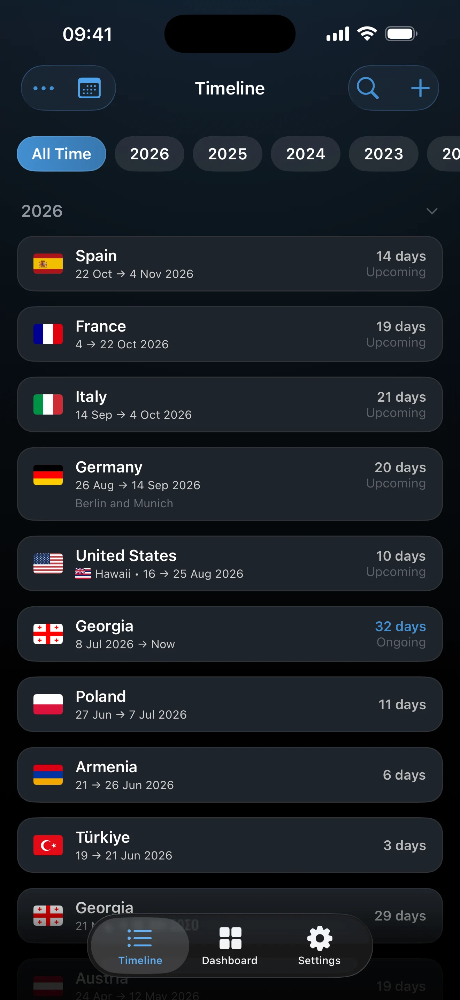
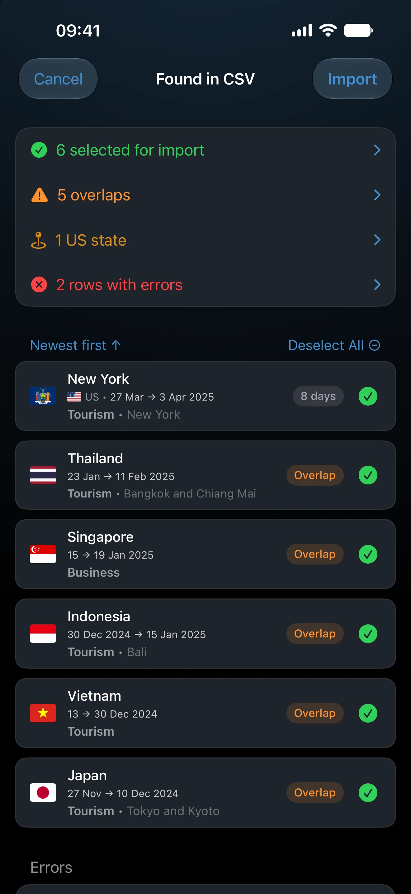
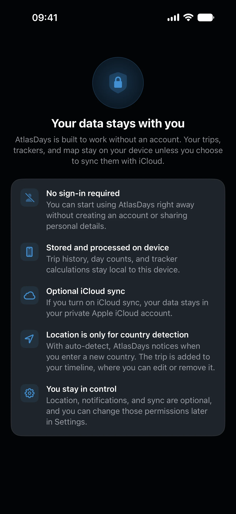

Visa day limits
Track Schengen 90/180 and other stay limits from exact trips. See used days, days left, and warning dates before you overstay.
AtlasDays is built for people who need accurate day counts: track visa limits, monitor residency or tax presence thresholds, and keep a long-term travel history you can trust. Your travel record stays on your device, with no account required and optional iCloud sync.
Track visa limits, residency thresholds, and travel history on-device. No account required, with optional iCloud sync.


Serious use cases
A private travel record for staying within limits, documenting presence, or rebuilding older history without inventing dates.
Track Schengen 90/180 and other stay limits from exact trips. See used days, days left, and warning dates before you overstay.
Monitor 183-day tests, calendar years, and fiscal-year thresholds when the count needs to hold up.
Rebuild older travel history without fake precision. Keep exact trips where you have them, and year-only or unknown visits where you do not.
How It Works
Check your tracker, inspect the timeline, and review imports before anything changes your record.
Dashboard
See active trackers and the rest of your record together.
Tracker detail
Threshold dates and counted trips stay in view.

Timeline
Past, ongoing, and upcoming entries stay readable.

Import and export
Check the file first, then export the same record later.
Keep visa limits, residency thresholds, and travel history in one private record.
Visa limits, residency thresholds, and long-term travel history can be sensitive records. AtlasDays keeps the privacy model simple: no required account, no AtlasDays server copy of your trips, and on-device calculations. Optional features like iCloud sync and country suggestions stay opt-in.

Beyond counting
AtlasDays stays focused on accurate counting first, but the same trip record also supports country review, broader stats, and shareable summaries without a second workflow.
Visited countries, transit countries, and country totals stay tied to the same trips you use for visa or residency tracking.
Review countries visited, trips taken, days abroad, and period totals from the same stored record across all-time, yearly, or custom ranges.
Create map and stats cards from the same record you already keep. Sharing is optional and does not change the underlying trip data.
Help Center and Learn
Go deeper into trackers, trip precision, imports, privacy, and the visa or residency rules the product is built around.
The AtlasDays Help Center covers trackers, trip modes, CSV import, privacy, and how the record behaves inside the app.
Long-form explainers for Schengen limits, 183-day residency logic, and preparing or reconstructing travel history when dates matter.
FAQ
The practical questions people ask before trusting a day count, an import, or a long-term travel record.
Yes. AtlasDays supports rolling windows, per-stay limits, calendar-year counting, and custom trackers.
Yes. AtlasDays supports exact trips, year-only entries, and unknown-date visits. Approximate history stays useful without turning into fake precision.
No. Country detection is optional and designed around country suggestions, not continuous location surveillance.
Yes. AtlasDays supports CSV import, CSV export, and PDF travel reports, and the import flow shows a preview with validation before imported trips are saved.
Yes. Your trips, trackers, and map stay available on-device without an internet connection.
No. AtlasDays helps you keep records and count days. Interpretation of immigration or tax rules is still your responsibility.
Automatic country detection uses iOS Significant Location Changes, which only fires in the background — when you actually cross a border. "When In Use" only works while the app is open, so it would miss most arrivals. The feature is optional; you can use AtlasDays entirely by logging trips manually.
No. AtlasDays is iOS only for now.
Not currently. AtlasDays tracks at the country level, so all four home nations log under the United Kingdom.
Download AtlasDays for iPhone and iPad to track visa limits, residency thresholds, and travel history from one private on-device record.